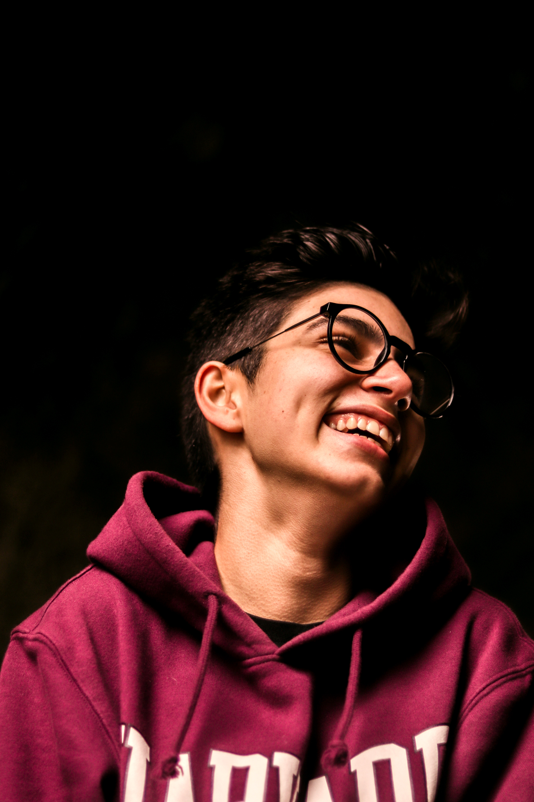
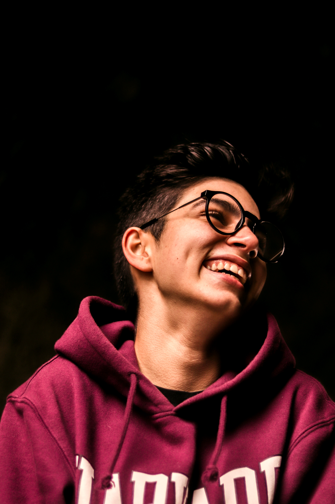
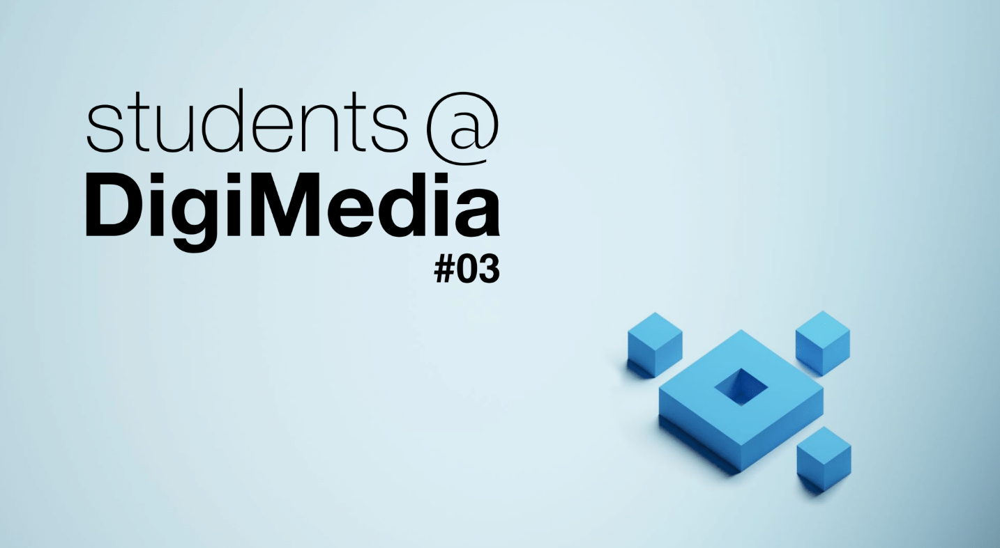

ME

Hi there! I’m Hugo (a.k.a. simoH), an eager game developer based in Portugal, looking to expand my capabilities and provide memorable experiences filled with choices, emotions, and fun. I'm currently studying Multimedia and Communication Technologies at the University of Aveiro, where I’ve obtained most of my experience, being involved in projects like 2D and 3D game and animations, some shown below, using Unity, Blender, Photoshop, and other software.
My focus areas include gameplay and level design and programming, while growing an interest and dabbling in narrative design, it being what made me fall in love with videogames in the first place with pieces like Telltale’s The Walking Dead, Resident Evil 4 or The Last of Us and their gameplay features and memorable characters and relationships.
Before diving into game development, I spent four years studying photography, getting used to the art of imagery and practicing with Lightroom and Photoshop. I still do it to the day as a hobby and it is something that influences my creative process and the way I put my ideas into motion in my projects. Here’s a showcase of my previous photography work. Enjoy!


.jpg)

 



PORTFOLIO
Spellbound Brews: Exam of Elixirs
Gameplay programmer, narrative and gameplay designer
This was me and my partner's final project for the Immersive 3D Ambiences course. The objective was to take the player to a magical world in which he/she will be able to practice and brew some of the most notorious potions from the Harry Potter franchise. Developed using the Unity game engine, Blender and Photoshop.
Click here to try it out!
Quack!
Gameplay programmer, narrative and level designer
This was a project made by me and four other partners for the Global GameJam 2024, whose theme was laughter, with the aim to create a very goofy and irrealistic experience for the audience to try out and laugh at its stupidity. Developed using the Unity game engine, Photoshop, the Piskel platform and FL Studio.
Click here to try it out!
Lift-Off!
Narrative and level designer, gameplay programmer
A 2D game that served as me and my group's project for the CBL Challenge, in partnership with Planetário do Porto, where the player can both explore some aspects of space and learn some of its most fascinating facts. Developed using the Unity game engine, Photoshop, the Piskel platform and FL Studio.
Click here to try it out!Detention Escape
Narrative and level designer
Made by the same group that brought you Lift-Off!, this was our first project for the 2D Games course, where we attempted to do a narrative focused mini-game so we could explore different narrative design choices, so we did in the form of an escape room that takes place in a school detention, where things are a bit more complex than they seem and, to be honest, kind of crazier too. Developed using the Twine platform.
Click here to try it out!3D Poster
3D designer
Made for the 3D Modeling and Animation Techniques course, this was one of three posters designed by my group on the theme "Once in a Lifetime Experiences". We tried giving it a comic twist, showing experiences one could quite literaly only have once, like jumping off a plane with no parachute. Designed using Blender.
Click here to check out in full resolution!

DigiMedia #03 - Narrative Videogames Analysis
Game analyst, researcher
The DigiMedia project attempts to bring students closer to both the university and other students, helping out with their projects. On the third edition of the project, I and three other colleagues were asked to analyze four of the most played and finished videogames of 2018 (mine is Marvel's Spiderman), picking their most intense scenes, reviewing those very same scenes, understand what the community thinks of these games and write an article based on our results. The project is still in development.
Melodrop
UX and UI designer
This was our first big academic project, and one me and my partner had a lot of fun designing. We were asked to create a fictional product and brand for an app, design its entire UI and then, prototype it. With that Melodrop was born. An app made for videographers and editors where they can get access and share tracks for their projects.
Click here to check out the design!
Access given via Dropbox due to the prototyping platform used being discontinued.
SAY HELLO
Thank you for tuning in, feel free to contact me through the following contacts for more information or inquiries.

simoH, over and out!